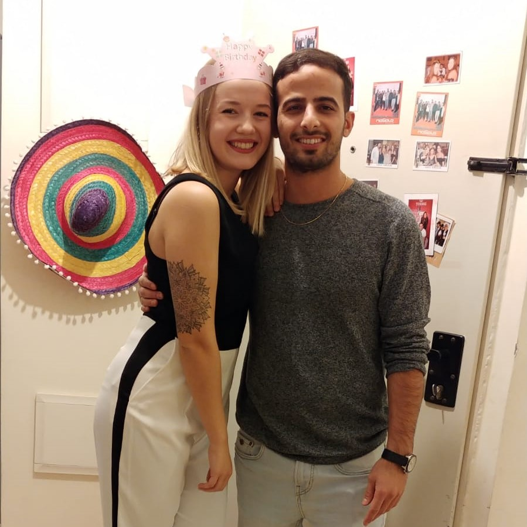
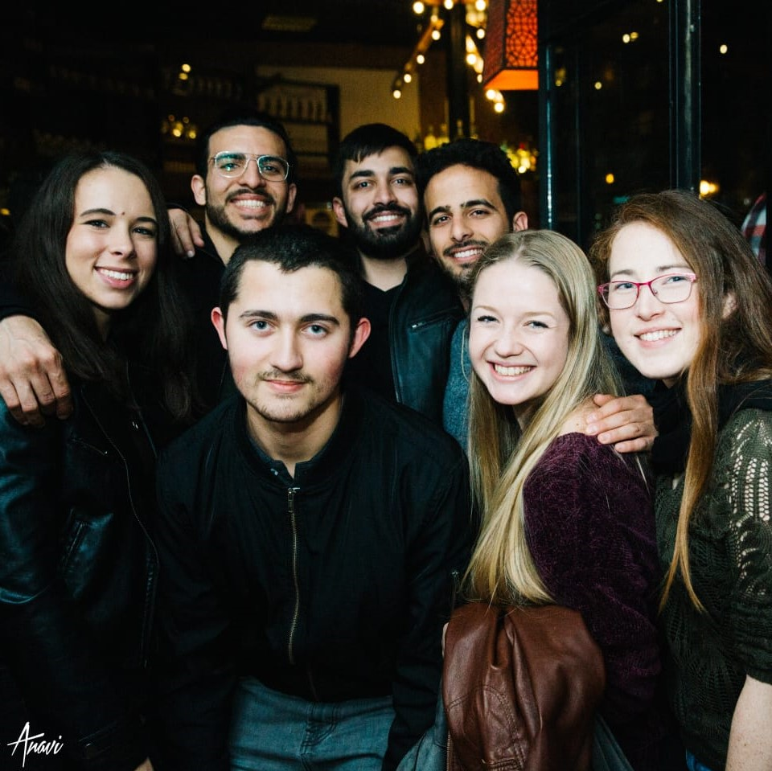

my photos



Hi everyone!
My name is Marina botvinnik 🍩
I was born in Ukraine and immigrated to Israel when I was 2. Since then, I've lived in Be'er Sheva.
Today i'm a research assistant at Yossi Oren's labratory,
the main goal of the research is to find a fingerprint based on the CPU microarchitecture
I am looking forward to build some awesome websites in this class!
What are the 3 main differences between web 1.0, web 2.0 and web 3.0?